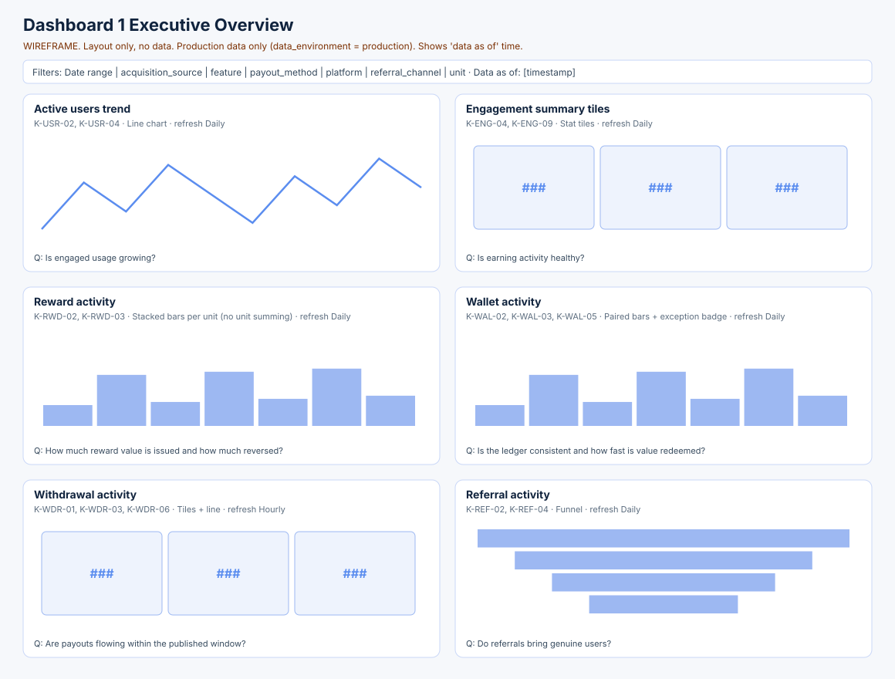
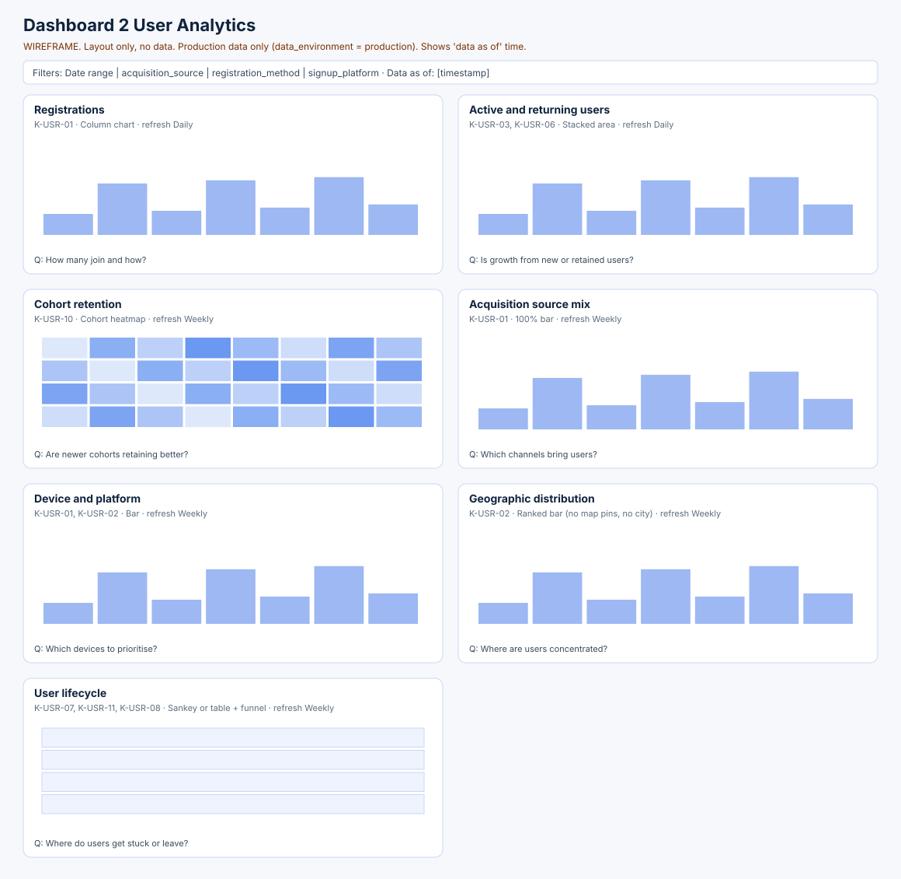
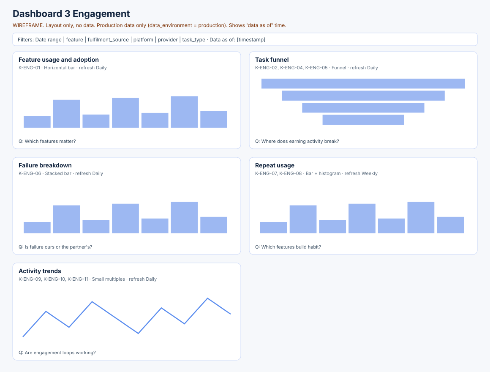
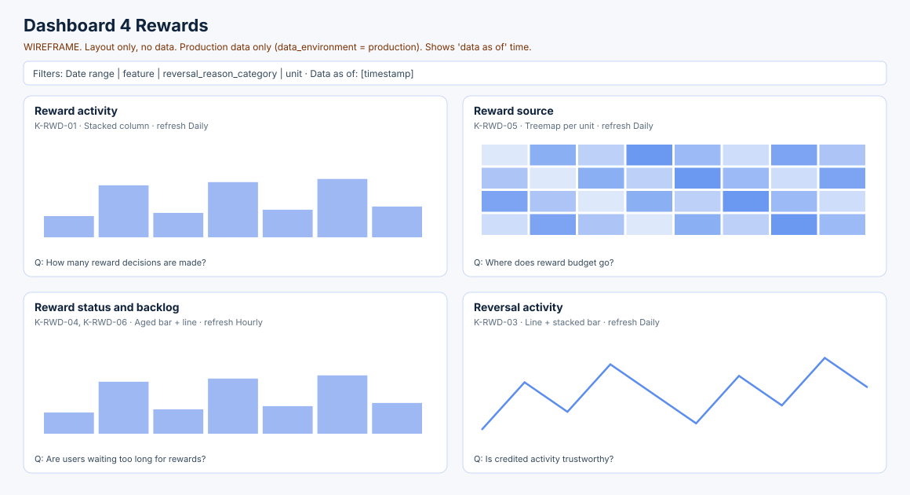
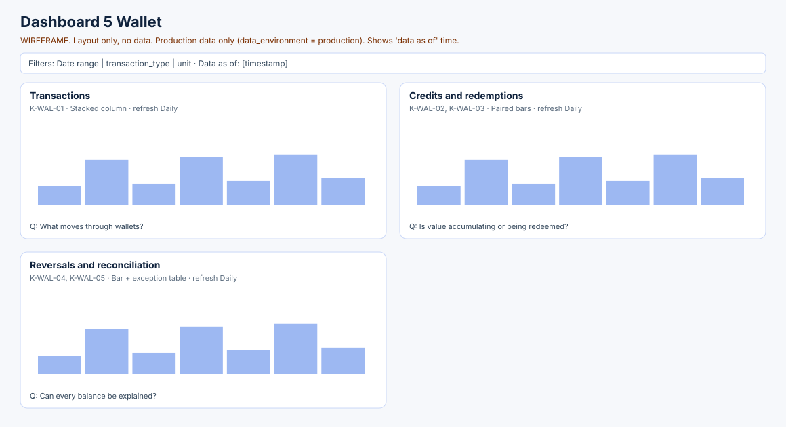
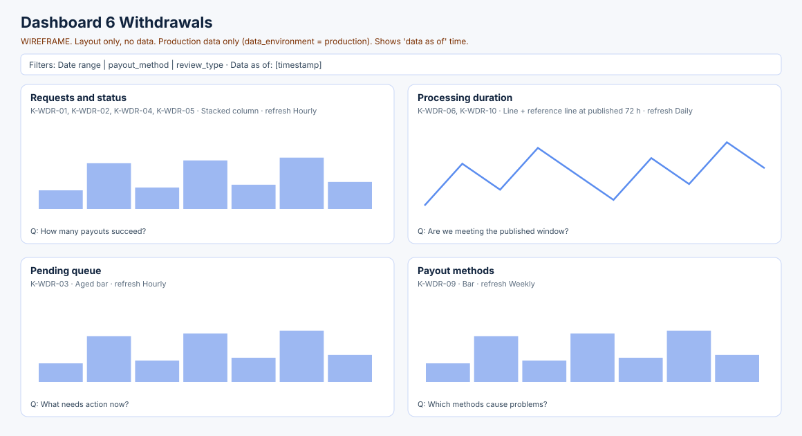
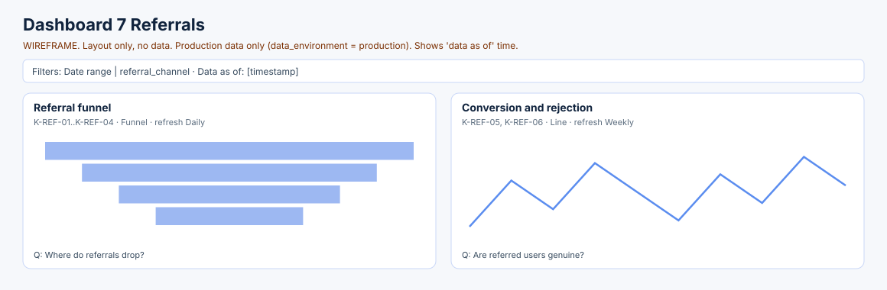

14 · Analytics Dashboard Blueprint
Status: proposed specification. No event, field, table or KPI in this document has been verified as implemented in VELOOP production (see Assumption A-001). Facts taken from official VELOOP pages cite a source ID from the Source & Verification Register (deliverable 19).
Spreadsheet: 14_Dashboard_Blueprint.xlsx. It specifies 31 visuals across 7 dashboards. Each visual lists metric (KPI ID), calculation, source, visualization, filters, dimensions, date range, refresh, business question and decision supported.
Design rules for every dashboard:
* Every money visual shows one unit at a time. VE, GEM, XP and INR are never added together until conversion rates are approved (A-010).
* Every dashboard shows a "data as of" timestamp and a stale-data banner (QC-15). It only reads data_environment = 'production' (QC-16).
* Reference lines may show published policy (for example the 72-hour withdrawal window). Invented targets are never shown.
* Geography stays at state level and is only included if collected and approved. No city, no maps of individuals.
Dashboard 1 Executive Overview

| visual | metric | calculation | source | visualization | filters | dimensions | date_range | refresh | business_question | decision_supported |
|---|---|---|---|---|---|---|---|---|---|---|
| Active users trend | K-USR-02, K-USR-04 | DAU daily line with MAU overlay | feature_events | Line chart | platform, acquisition_source | IST day | Last 90 days | Daily | Is engaged usage growing? | Where to focus growth vs retention effort |
| Engagement summary tiles | K-ENG-04, K-ENG-09 | Current value + change vs previous period | task_activity, feature_events | Stat tiles | date range | - | Last 7 days vs prior 7 | Daily | Is earning activity healthy? | Escalate funnel drops |
| Reward activity | K-RWD-02, K-RWD-03 | Credited volume per unit; reversal rate | rewards | Stacked bars per unit (no unit summing) | unit, feature | week | Last 12 weeks | Daily | How much reward value is issued and how much reversed? | Budget and quality review |
| Wallet activity | K-WAL-02, K-WAL-03, K-WAL-05 | Credits vs redemptions per unit; exception count | wallet_transactions | Paired bars + exception badge | unit | week | Last 12 weeks | Daily | Is the ledger consistent and how fast is value redeemed? | Block decisions if exceptions > 0 |
| Withdrawal activity | K-WDR-01, K-WDR-03, K-WDR-06 | Requests, open queue, P90 processing hours | withdrawals | Tiles + line | payout_method | day | Last 30 days | Hourly | Are payouts flowing within the published window? | Staff review queue; contact payout partner |
| Referral activity | K-REF-02, K-REF-04 | Registrations vs conversions | referrals | Funnel | referral_channel | week | Last 12 weeks | Daily | Do referrals bring genuine users? | Adjust referral reward/rules |
Dashboard 2 User Analytics

| visual | metric | calculation | source | visualization | filters | dimensions | date_range | refresh | business_question | decision_supported |
|---|---|---|---|---|---|---|---|---|---|---|
| Registrations | K-USR-01 | Daily count | users | Column chart | acquisition_source, registration_method, signup_platform | IST day | Last 90 days | Daily | How many join and how? | Channel spend |
| Active and returning users | K-USR-03, K-USR-06 | WAU split new vs returning | feature_events, users | Stacked area | acquisition_source | week | Last 26 weeks | Daily | Is growth from new or retained users? | Retention programme |
| Cohort retention | K-USR-10 | Day-7 retention by weekly cohort | users, feature_events | Cohort heatmap | acquisition_source | registration week | Last 12 cohorts | Weekly | Are newer cohorts retaining better? | Onboarding changes |
| Acquisition source mix | K-USR-01 | Share by source | users | 100% bar | - | month | Last 6 months | Weekly | Which channels bring users? | Channel focus |
| Device and platform | K-USR-01, K-USR-02 | Users by signup_platform/device_type | users, sessions | Bar | - | month | Last 90 days | Weekly | Which devices to prioritise? | UX and app roadmap |
| Geographic distribution | K-USR-02 | Active users by state_region (only if collected and approved) | users | Ranked bar (no map pins, no city) | - | month | Last 90 days | Weekly | Where are users concentrated? | Region support / language |
| User lifecycle | K-USR-07, K-USR-11, K-USR-08 | Users by account_status; status transitions; onboarding funnel | users, user_status_history | Sankey or table + funnel | - | month | Last 6 months | Weekly | Where do users get stuck or leave? | Re-engagement and enforcement review |
Dashboard 3 Engagement

| visual | metric | calculation | source | visualization | filters | dimensions | date_range | refresh | business_question | decision_supported |
|---|---|---|---|---|---|---|---|---|---|---|
| Feature usage and adoption | K-ENG-01 | Adoption % per feature | feature_events | Horizontal bar | platform | feature | Last 30 days | Daily | Which features matter? | Feature investment |
| Task funnel | K-ENG-02, K-ENG-04, K-ENG-05 | Viewed > opened > started > completed > credited | feature_events, task_activity, rewards | Funnel | task_type, fulfilment_source | - | Last 30 days (3-day maturity) | Daily | Where does earning activity break? | Fix UX or partner |
| Failure breakdown | K-ENG-06 | Failures by category and tracking_source | task_activity | Stacked bar | task_type, provider | week | Last 12 weeks | Daily | Is failure ours or the partner's? | Partner escalation |
| Repeat usage | K-ENG-07, K-ENG-08 | Repeat rate per feature; active days per user | feature_events | Bar + histogram | feature | - | Last 30 days | Weekly | Which features build habit? | Roadmap |
| Activity trends | K-ENG-09, K-ENG-10, K-ENG-11 | Daily claim rate, spin completion, mission completion | feature_events, mission_progress | Small multiples | - | IST day | Last 90 days | Daily | Are engagement loops working? | Tune mechanics |
Dashboard 4 Rewards

| visual | metric | calculation | source | visualization | filters | dimensions | date_range | refresh | business_question | decision_supported |
|---|---|---|---|---|---|---|---|---|---|---|
| Reward activity | K-RWD-01 | Reward records by status | rewards | Stacked column | unit | IST day | Last 90 days | Daily | How many reward decisions are made? | Ops capacity |
| Reward source | K-RWD-05 | Credited volume by source_type/feature per unit | rewards | Treemap per unit | unit | - | Last 30 days | Daily | Where does reward budget go? | Rebalance rewards |
| Reward status and backlog | K-RWD-04, K-RWD-06 | Pending by age bucket; credit lag P50/P90 | rewards, task_activity | Aged bar + line | feature | - | Snapshot + last 30 days | Hourly | Are users waiting too long for rewards? | Validation capacity, partner follow-up |
| Reversal activity | K-RWD-03 | Reversal rate by credit cohort and reason | rewards | Line + stacked bar | reversal_reason_category, feature | week | Last 12 weeks | Daily | Is credited activity trustworthy? | Quality controls |
Dashboard 5 Wallet

| visual | metric | calculation | source | visualization | filters | dimensions | date_range | refresh | business_question | decision_supported |
|---|---|---|---|---|---|---|---|---|---|---|
| Transactions | K-WAL-01 | Rows by type and status | wallet_transactions | Stacked column | unit | IST day | Last 90 days | Daily | What moves through wallets? | Capacity |
| Credits and redemptions | K-WAL-02, K-WAL-03 | Credit vs redemption volume per unit | wallet_transactions | Paired bars | unit | week | Last 12 weeks | Daily | Is value accumulating or being redeemed? | Liability planning |
| Reversals and reconciliation | K-WAL-04, K-WAL-05 | Reversal volume; exception list | wallet_transactions, rewards, withdrawals | Bar + exception table | transaction_type | - | Last 30 days | Daily | Can every balance be explained? | Engineering fixes before reporting |
Dashboard 6 Withdrawals

| visual | metric | calculation | source | visualization | filters | dimensions | date_range | refresh | business_question | decision_supported |
|---|---|---|---|---|---|---|---|---|---|---|
| Requests and status | K-WDR-01, K-WDR-02, K-WDR-04, K-WDR-05 | Count by status over time | withdrawals | Stacked column | payout_method | IST day | Last 90 days | Hourly | How many payouts succeed? | Ops staffing |
| Processing duration | K-WDR-06, K-WDR-10 | P50/P90 hours; share within 72 h | withdrawals | Line + reference line at published 72 h | payout_method, review_type | IST day | Last 90 days | Daily | Are we meeting the published window? | Escalation |
| Pending queue | K-WDR-03 | Open requests by age | withdrawals | Aged bar | payout_method | - | Snapshot | Hourly | What needs action now? | Daily ops triage |
| Payout methods | K-WDR-09 | Share by method; rejection rate by method | withdrawals | Bar | - | month | Last 6 months | Weekly | Which methods cause problems? | Partner decisions |
Dashboard 7 Referrals

| visual | metric | calculation | source | visualization | filters | dimensions | date_range | refresh | business_question | decision_supported |
|---|---|---|---|---|---|---|---|---|---|---|
| Referral funnel | K-REF-01..K-REF-04 | Created > registered > activated > converted | referrals | Funnel | referral_channel | - | Last 90 days | Daily | Where do referrals drop? | Referral UX |
| Conversion and rejection | K-REF-05, K-REF-06 | Rates by registration cohort | referrals | Line | referral_channel | month cohort | Last 6 cohorts | Weekly | Are referred users genuine? | Referral reward policy |